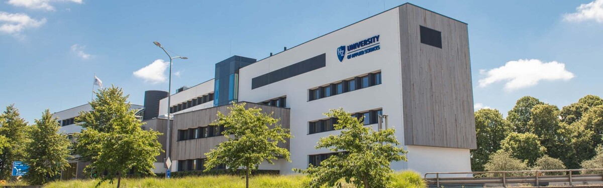
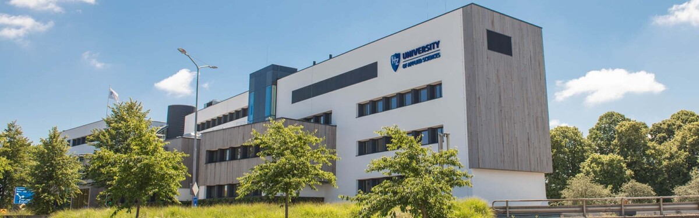

What made me decide to study ICT?
My interest in ICT began when I was in grade 9. At that time, I loved playing games, which sparked my curiosity about how they were created. This motivated me to start learning ICT and science, and I found the subjects very engaging. Through the internet, I also discovered how technology connects people across the world and provides access to global knowledge, which deepened my interest further.
Over the next few years, I realized that ICT not only makes communication and learning easier but also creates opportunities to work remotely, just like in a traditional office. This flexibility fascinated me. Later, I understood that it is possible to build a career by developing games and software, while also earning a living from home. To keep up with the modern world, I believe it is essential to stay updated with ICT, and this realization further strengthened my decision. With these motivations, I chose ICT as my program of study and set my goal to become a software developer.
Why HZ University of Applied Science?
I chose HZ University because it focuses on both academic learning and practical, hands-on experience. I believe this balance is very important, as theoretical knowledge alone is not enough in today’s world. The practical orientation of HZ University ensures that students are well-prepared for real-life challenges in their careers, which makes it the right place for me to pursue my studies.